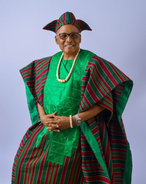
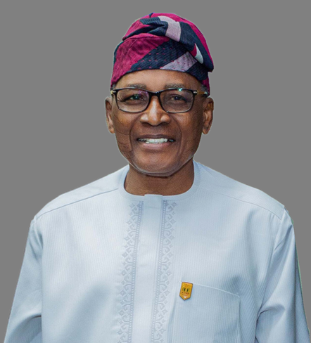

Advisory Board
The State Advisory Board for the Mobile Truck Clinic on Cervical Cancer Screening comprises distinguished individuals and key stakeholders committed to supporting the success of the initiative. The Board provides strategic guidance, advocacy, and institutional support to enhance the effective delivery of cervical cancer screening services within the state. Through their leadership and commitment to public health, the Advisory Board plays a vital role in promoting awareness, improving access to screening, and strengthening community engagement for better women’s health outcomes.
Meet Our Advisory Board
Chief Bisi Adesola

Chief Adebisi Adesola is a highly respected administrator, elder statesman, and distinguished public servant whose remarkable career has left an enduring imprint on governance and public administration in Oyo State, Nigeria. With decades of exemplary service in the public sector, he rose through the ranks of the Oyo State Civil Service to become its Head of Service, where he championed institutional efficiency, professionalism, and workforce development. He subsequently served as Secretary to the State Government (SSG), providing strategic leadership and policy direction in support of effective governance and sustainable development. His extensive leadership experience also includes serving as Chief Executive of the Broadcasting Corporation of Oyo State (BCOS) and as Director-General across several ministries, departments, and agencies. A distinguished member of the National Institute for Policy and Strategic Studies (NIPSS) and the revered Asiwaju of Ayetoro-Oke, Chief Adesola is widely recognised for his unwavering commitment to public service, community development, and nation-building. As Chairman of the Mobile Truck Clinic (MTC) State Advisory Board, he brings exceptional leadership, strategic insight, and a wealth of administrative experience to advancing equitable healthcare access and improving health outcomes for underserved communities. His dedication to mentorship, public service excellence, and societal progress continues to inspire generations of leaders within and beyond Oyo State.
Dr. Bashir Abiodun Olanrewaju (PhD)
A seasoned administrator with over 30 years of exemplary service in policy formulation, personnel management, and organisational transformation within Nigeria’s Local Government and State Civil Service. Dr. Olanrewaju is renowned for his unwavering commitment to international best practices, ethical leadership, and fostering justice and inclusivity. Educational Excellence: Holder of multiple advanced degrees, including a PhD in Peace and Conflict Studies from the University of Ibadan, and professional diplomas in Public Administration and Advanced Management. His academic journey spans the University of Ife (now Obafemi Awolowo University), the University of Lagos, and specialised training at prestigious institutions worldwide. Professional Impact: Beginning his career as an Administrative Officer in Oyo State, he rose through the ranks to serve as a Permanent Secretary, leading key ministries such as Information, Culture, Tourism, Environment, Local Government, Energy and TESCOM. Notably, he spearheaded the adoption of the Oyo State Anthem and led environmental initiatives like the Awotan dumpsite rehabilitation. His leadership earned the Ministry of Information the accolade of Most Outstanding MDA in 2017. Global Training & Memberships: A global citizen of public administration, he has undergone strategic management, community development, and leadership training in the United States, the UK, and Canada. He is a Fellow of the Institute of Public Administration of Nigeria (IPAN) and holds memberships in NIM, SPSP, ICMC, and other professional bodies. Community & Humanitarian Service: A passionate advocate for social justice and community development, Dr. Olanrewaju has held influential roles in labour unions, student societies, and community organisations, including being an ex-PRO of Ife Varsity Literary and English Students Society, former Vice President, (International) the Muslim Students' Society of Nigeria, Chairmanship of NULGE at the State and national levels, the Nigeria Labour Congress, Oyo State, former NLC NEC member, ex-Secretary General and the current Vice President 1 of the Ibadan Progressive Union; the first Socio-Cultural Indigenes Association in Ibadanland. Currently, he dedicates his post-retirement years to training, consultancy, and community service. Personal Life: A dedicated family man, he is happily married with children and serves as a Justice of the Peace in Oyo State.
Barr. Adelayo L. Oriekun
Adelayo has 30+ years’ experience in Corporate & Commercial Law with a core focus on Alternative Dispute Resolution. She is a Fellow of the Chartered Institute of Arbitrators, UK, and serves as Mediator, Arbitrator, Counsel, and Tribunal Secretary in domestic and international matters.
Qualifications
FCIArb (UK) LL.M, BL, LL.B, NCE University of Leeds | B.Ed (Eng) University of Ibadan | Diplomas in Arbitration, Mediation & Compliance
Key RolesAlternate Lead, NBA Women Forum 2024
First Female Vice Chairman, NBA Ibadan Branch in 66 years
Panel Member: Lagos Court of Arbitration, Oyo & Lagos Multi-Door Courthouses
Approved Tutor, Chartered Institute of Arbitrators UK
Chairman, Oluyole Microfinance Bank
Memberships
CIArb UK, SCMA UK, ICMC Nigeria, NBA, Arbitral Women, African Women in Law
Known for principled advocacy, dispute resolution expertise, and leadership in advancing women in law.
Qualifications
FCIArb (UK) LL.M, BL, LL.B, NCE University of Leeds | B.Ed (Eng) University of Ibadan | Diplomas in Arbitration, Mediation & Compliance
Key Roles
Memberships
CIArb UK, SCMA UK, ICMC Nigeria, NBA, Arbitral Women, African Women in Law
Known for principled advocacy, dispute resolution expertise, and leadership in advancing women in law.
Dr. Risikat Ayodele Busari
Dr. Risikat Ayodele Busari (née Raji) was born to Late Alhaji Raji Akanni
Adabo, a two-time Chairman of Iseyin Local Government Area, and Late
Madam Sifawu Awele (of Saki ancestry) at Ile Alaga Oke Oja, Iseyin on
Wednesday, 8th September, 1965.
She lived an eventful life in Iseyin town before relocating to Ibadan after
marriage; where she lives up till date.
Education
She attended L. A. Demonstration School, Iseyin between 1971 and 1976
before she proceeded to Anwar-ul Islam Secondary School, Iseyin between
1976 to 1981.
The urge for further education saw her gaining admission to the then St.
Andrews College of Education, Oyo in 1983, graduating in 1986 with the
National Certificate in Education.
Still in quest for knowledge, she gained admission to the University of Ilorin in
1989 and graduated in 1992 with a Bachelor’s degree in Educational
Management. In 2005, she bagged a Master of Science degree from
Department of Local Government Studies, Obafemi Awolowo University, Ile
Ife. She graduated both degrees in flying colours.
Dr. Busari capped her academic pursuit, first with another Master degree in
School Media and eventually, a Doctor of Philosophy (PhD) in Social Media
Use in Education from the University of Ibadan in 2010 and 2015,
respectively.
Professional Career
In 1994, Dr. Risikat Ayodele Busari joined the services of the Oyo State Local
Government Service Commission as Community Development Officer.
She sat for, and aced the competitive examination of the Administrative Staff
College in 1999. This provided her the qualification to convert to the
administrative cadre, thus she became an Administrative Officer after
successfully passing the requisite interview. She rose through the ranks, and
today she is retiring as Head of Local Government Administration (HLGA) in
Ido Local Government.
It is instructive to note that Dr. Risikat Ayodele Busari made her family
profoundly proud when she served as the Secretary of the Oyo State Local
Government Staff Pension Board for a decade, between 2012 and 2022.
She left the position honourably and without any blemish. It is on record that
she introduced a lot of innovations and carried out a complete overhaul of the
pension payment architecture for retirees in the local government service and
primary school of the state.
A lover of education, she has attended several seminars, workshops and
conferences, both local and international, and she has delivered more than
forty (40) topical papers at different fora, particularly in the line of her career
as a civil servant.
Other Life Achievements
Dr. Risikat Ayodele Busari is a member of the following professional bodies:
1. Nigeria School Library Association
2. Institute of Corporate Administration, where she is a Fellow
3. Nigeria Institute of Management
4. Institute of Chartered Secretaries and Administrators of Nigeria.
In the area of humanitarian/voluntary service, she is an Associate Member of
the Nigerian Red Cross Society, Oyo State. She is a recipient of several
awards and distinctions, both in and outside the world of academia.
These include:
1. Best Student in Personnel Management, Department of Educational
Management, University of Ilorin, 1992;
2. Best Overall Master’s Student, Department of Local Government
Studies, Obafemi Awolowo University, Ile-Ife, 2004;
3. Privilege Award, Odere Communication and Productions, Iseyin,
2013;
4. Patriot Award, Iseyin Council of Societies, Iseyin, 2017;
5. Award of Excellence (Patriotic Woman of the Year), Iseyin People’s
Award (IPA), powered by Iseyin People on Facebook, 2018;
6. Award of Excellence, Al-Mubarak Interest-Free Cooperative Society,
Ibadan South East Local Government, 2018.
Dr. Risikat Ayodele Busari, a true daughter of the soil, is also the current
Secretary to the Board of Trustees of the Iseyin Development Union.
Dr. Busari enjoys assisting the less-privileged, reading, listening to music,
gisting and dancing. Dr. Risikat Ayodele Busari is married to Dr. Waheed
Bayonle Busari. The marriage is blessed with beautiful, loving children and
grandchildren.
Prof. A.A. Aderinto
Chief Yanju Adegbite, popularly known as “The Music Merchant,” is a distinguished veteran broadcaster, media personality, communications expert and public servant whose remarkable career spans several decades. Born on 10 January 1955, he demonstrated exceptional resilience from an early age, overcoming the loss of his father at 13 and later sacrificing his own education to support the schooling of his younger siblings. His entry into broadcasting was unexpected but marked the beginning of an extraordinary journey. Through courage, natural communication ability and an exceptional passion for public engagement, he rose from a studio manager to become a pioneering voice in broadcasting. He became the first voice heard on Radio O-Y-O and the first television personality of the Television Service of Oyo State (TSOS), now the Broadcasting Corporation of Oyo State (BCOS). Over the years, Chief Adegbite has distinguished himself through his ability to connect with people, communicate effectively, inspire public engagement and translate information into messages that communities can understand and embrace. His iconic identity as “The Music Merchant” reflects not only his broadcasting legacy but also his creativity, originality and ability to build a strong connection with diverse audiences. Between 2011 and 2015, he served as Special Adviser on Broadcasting to the Oyo State Governor and Chief Executive Officer of BCOS, providing leadership in the state's broadcasting sector. His career is characterized by resilience, visionary leadership, communication excellence, creativity, public service and a deep understanding of community engagement. Chief Yanju Adegbite brings these exceptional qualities to the Mobile Truck Clinic Advisory Board, where his extensive experience in broadcasting, public communication, stakeholder engagement and community mobilization provides valuable support for the project's mission to improve access to cervical cancer screening, HPV vaccination, STI services and other essential health interventions across communities in Oyo State. His enduring strength lies in his ability to inspire trust, mobilize communities and use communication as a powerful tool for social impact—qualities that make him a valuable member of the Mobile Truck Clinic Advisory Board.
Dr. Muideen Olatunji
Dr. Muideen Olatunji is a seasoned Public Health Physician and health systems leader with nearly three decades of experience in public health practice, health management, policy development and community health. Throughout his distinguished career, he has demonstrated a strong commitment to improving health outcomes through evidence-based interventions, effective leadership and equitable access to quality healthcare. For almost three decades, Dr. Olatunji has served as a Medical Officer of Health across various Local Government Areas of Oyo State, gaining extensive experience in community health, disease prevention, health programme implementation and health systems management. His professional journey has also seen him provide leadership within professional associations and serve in senior management capacities, including as a Chief Executive Officer and Executive Secretary of a health agency. His expertise spans infectious disease control, chronic disease prevention, health system strengthening, health management, policy development and community engagement. He is particularly passionate about bridging the gap between scientific evidence, health policy and community-level action to achieve sustainable improvements in population health. Dr. Olatunji brings to the Mobile Truck Clinic Advisory Board a wealth of practical experience in strategic leadership, public health programme implementation, stakeholder engagement and health systems management. His extensive understanding of the healthcare landscape in Oyo State positions him to provide valuable guidance in strengthening community-based interventions and expanding access to essential preventive health services. His exceptional strength lies in combining decades of frontline public health experience with strategic leadership and a strong commitment to health equity, making him a valuable contributor to the Mobile Truck Clinic’s mission of bringing quality preventive healthcare closer to underserved communities.